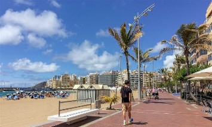

Pasea por la playa de las Canteras, desde el Auditorio hasta la Puntilla.

Nombre: Paseo por las Canteras.
Lugar: Playa de las Canteras.
Fecha y hora de inicio: Sin determinar.
Duración: Sin determinar.
Precio: Gratis.
Descripción: Camina por el recorrido que bordea la
playa de las Canteras a lo largo de 3,2 km. Empieza admirando
el Auditoria Alfredo Kraus y termina en el asombroso rompeolas
en la Puntilla. Durante tu caminata, podrás pararte a contemplar
las distintas vistas y perspectivas que se te ofrecen de la
playa a la vez que ojeas las tiendas y quizás picas algo en
alguna de los inumerables puestos de comida y restaurantes.